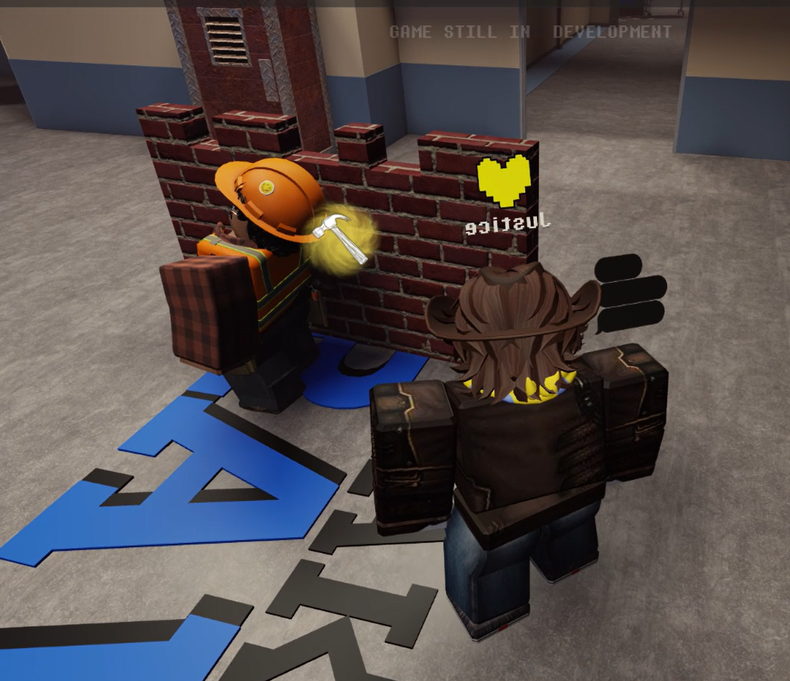

Account Info
- Usertag: Hospital_playsgames
- Display Name: VSad
- Roblox Cosplays:
- Clover (Undertale Yellow)
- Ink!Sans
- Tenna (Deltarune)
- Puppet (Natori)
- Cyrox (Original Character)
- Rem (Original Character)
- Chat Group: 16+, I will not be able to see those not suitable for this chat group!

Info about me in Daybreak
- Mains:
- Version Started: Daybreak 2
- Level: Hidden
- Favorite
Survivor: Eiji Inagaki
Favorite Perk: Good Teacher - Favorite Killer:
Kiat (Hacker) & Alexis (Watcher)
Despised Killer: Christoph (Surgeon) & Brock (Nepotist) - Favorite Map: Shifty Station
Something Evil Will Happen Info
- Preferred Role: Supporting
- Favorite Emote: Get Down & Mesmerizer
- Favorite Gamemode: Wipeout
- Favorite Tool: Teapot